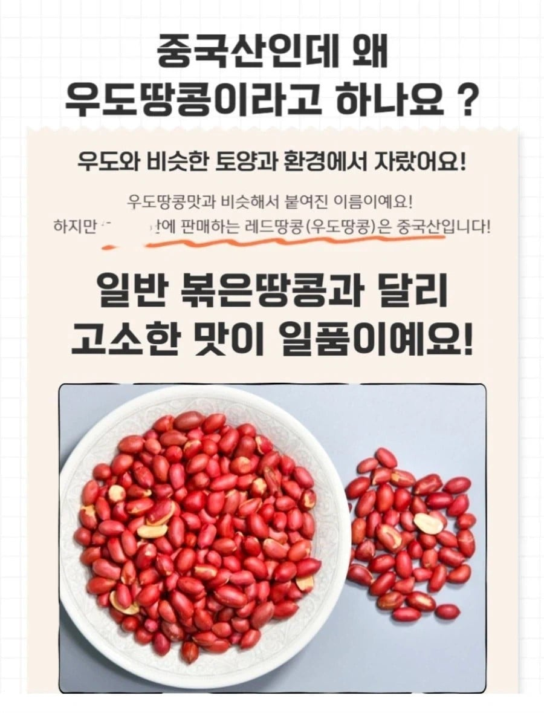

https://bbs.ruliweb.com/best/board/300143/read/76944699

우린 그걸 택갈이라 하고 처벌하고 있어요.
지금은 우도 '땅콩맛' 땅콩이라고 판매 중
우도맛이 뭔데 ㅋㅋㅋㅋ
https://bbs.ruliweb.com/best/board/300143/read/76944699

우린 그걸 택갈이라 하고 처벌하고 있어요.
지금은 우도 '땅콩맛' 땅콩이라고 판매 중
우도맛이 뭔데 ㅋㅋㅋㅋ
병신새끼들 박스에 5kg 적어놓고 4.5kg 담은 다음에 박스무게 포함 ㅇㅈㄹ 해놓고 상품판매창에 적어놨으니 문제없다고 하는새끼들도 한트럭임
개소리마저 그럴싸하게 포장하지도 못했내
저런 기열 찐빠 중국산 땅콩 대신 내 맛있는 오도 땅콩을 먹어보게 아쎄이!
어떤 땅콩은 두 번만 먹을 수 있다
저나라 땅콩 오질라게 쳐먹어서 땅콩은 먹을만한듯
지역명을 진짜 개판으로 쓰는 이상한 곳이네
엄마가 있는데도 애미없는 새끼라고 불리는 이유
청양고추 같은 느낌으로 생각한건가?
한우 (미국산) 이랑 뭐가달라 ㅅㅂ
K-cow ㄷㄷ
청양고추는 청양이 아니라 청송하고 영양에서 시작했다던데 ㅋㅋㅋ
ㅋㅋㅋ그렇다더라
지역명이아니라 아예 제품명으로 생각했나
맞음ㅋㅋ굳이 따지자면 영양고추가 더 유명함 청송은 사과!
한우랑 맛이 비슷해요!
중국산 땅콩은 양꼬치집 소금범벅해야 맛남
우마우도!
뭔..뭠소리지이게
차라리 지역명이 아닌 고유 브랜드명입니다 ㅇㅈㄹ을 하든가 ㅋㅋ
우도라는 공장이나 농장을 중국에 만들고
우도땅콩이라 팔아도 불벚이려나
2010년도에 이미 참개산 썼다고 나오네
호주산 와규라던지 일본산 저지밀크 같은거지 뭐
수입산 냉동 소고기 싹 다 냉장 한우라고 팔면 되겠네
병신들
어디꺼길래?
우도땅콩 1kg 4만원정도 하네
저거는 3.75kg에 2만원정도고..
제주도(중국산)당근케익이잖아
그래서 기념품 샵에 가면 가장 먼저 봐야하는 것이 원산지 표기임. 이건 해외 어디를 가든 무조건임.
청양고추느낌 아냐?
느그들은 한국 햅쌀맛(후쿠시마산) 햅쌀 좀 먹어라
아니 근데 신기한게 우리나라 농산물은 왜 각기특유의 향이 강하고 중국은 거의 무맛이지? 땅콩 잣은 넘사벽차이고, 마트에서 당근향나는건 한국거고, 아무맛안나는큰당근은 중국산임, 전에 이런댓글 다니까 뭐 신선도 차이라던데 전혀 납득안되는 말이고, 농산물만 그런게 아니고 게불도 맛이 천지차이임, 땅의 기운뭐 이런게 실제로 있는건가?
중국 가서 땅콩 먹을때는 싸고맛있어서 사왔는데
넘어오면서 시간이 많이 지나서그런가?
시발련아 그럼 우리엄마랑 비슷하게 생긴 분 보면 안심하고 젖빨아도 되냐?? 이거 웃긴새끼네
니애미창녀. 니애미창녀라는 중국 도시는 없어요. 그냥 니애미창녀라는 뜻이에요.
장난하나 ㅋㅋㅋㅋ 우도에서만 자라는 별도의 품종이 있고 해당 품종을 중국에서 재배했다면 어느정도 이해할 수 있는데 그냥 일반 땅콩이 우도에서 자란거 아냐? 그럼 우도에서 자란 특색이 없는데 어떻게 우도 땅콩임.
처벌안당하나
나도 밤나무처럼
우덜도 땅콩이요
해서 우도땅콩인가 했는데
시불 뭔 개소리야
가서 비싸게 사먹었는데
여자맛
어쩐지 우도에서 '우도땅콩과자'를 샀는데 제조가 경북어쩌고, 원재료에 땅콩 원산지가 중국산 이랬음
하긴 애초에 이상한거다
우도에 과자공장이 없는데 우도땅콩을 내륙 공장에서 가공해서 다시 완제품이 우도로 들여와서 팔고 이러면
과자한봉지에 이마넌 이러겠다
바로 소비자고발센터 신고하지
우도땅콩맛 땅콩은 ㅋㅋㅋㅋㅋ
??? : 조선 옷을 입고 조선 말을 쓰니 어찌 조선인이 아니라 할 수 있겠는가?
홍철 없는 홍철팀
저렇게 몇줄 적어놓으면 문제가 없을꺼라고 생각한걸까 ㅋㅋㅋㅋㅋ